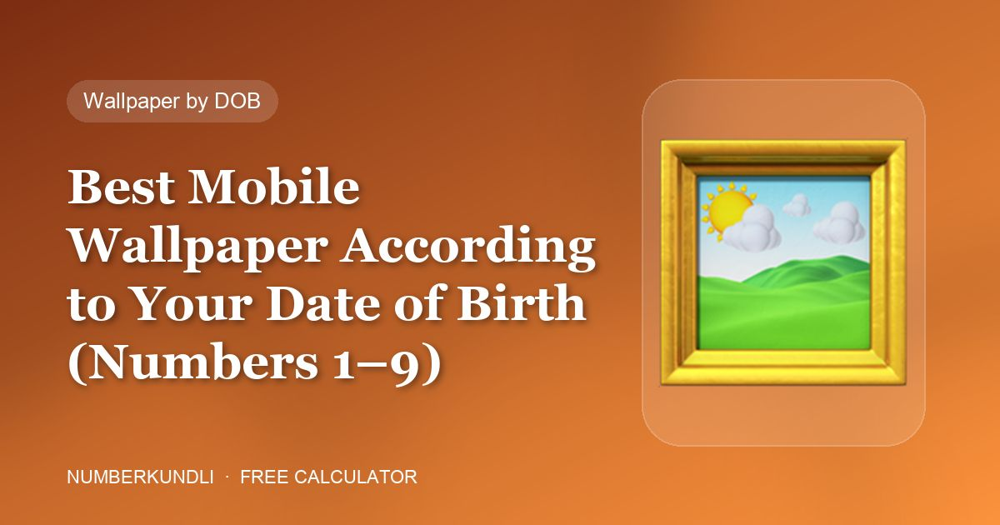

Best Mobile Wallpaper According to Your Date of Birth (Numbers 1–9)

You look at your phone's lock screen more often than at any painting, photo or view. Mobile numerology takes that seriously: the wallpaper should reinforce the planet of your Birth number (and, if different, your Destiny number). Below is the full list from the class, with the solid colours to use if you prefer a plain background.
Wallpaper for each number
| Number | Images | Solid colour |
|---|---|---|
| 1 Sun | Rising sun, sun with rays, a photo of you with your father | Yellow / orange |
| 2 Moon | Full moon scattering light, Buddha in meditation, twin birds or leaves, a couple's picture, a photo with your mother | White / silver |
| 3 Jupiter | Blooming yellow flowers, your Guru, Maa Saraswati, a library | Yellow / orange / golden |
| 4 Rahu | A bold "1" (friendly number), mountains without snow, a photo with your grandparents | Light blue |
| 5 Mercury | Greenery, rock crystals, snow-covered mountains | Light green |
| 6 Venus | Luxury items, Lakshmi ji giving money, metallic chimes, currency and diamonds, spouse or family photo | Blue |
| 7 Ketu | Airplane taking off, a saint or sage, Buddha in meditation, seashore or snowy peak | Light green / white |
| 8 Saturn | A beautiful village, a smooth road through greenery, a high-rise building | Dark blue |
| 9 Mars | Blooming red flowers, Hanuman ji, a blooming red rose, an army picture | Red |
Why these images?
Each set reflects the planet's nature. The Sun's number gets sunrise and the father figure (the Sun signifies the father). The Moon's number gets the mother, water and calm pairs. Jupiter is the teacher, so 3 gets Guru, Saraswati and books. Venus loves beauty and wealth, so 6 gets Lakshmi, diamonds and family. Mars is action, so 9 gets red, Hanuman and the army.
Birth number vs Destiny number
If the two numbers differ, you have two valid sets. A practical approach is to use the Birth-number image on the lock screen (what you see first, reflecting your nature) and the Destiny-number image on the home screen (what you work on, reflecting your direction). If both numbers are the same, one set applies.
Things to avoid
- Dark, chaotic or violent images for the calm numbers 2 and 7.
- Snow-capped mountains for number 4 — the class specifies mountains without snow.
- A wallpaper in an enemy colour: for example, red (Mars) for Birth number 2 or 4, whose enemy is 9.
Our analyser shows both wallpaper sets with colour swatches once you enter your date of birth.
Check your own number in 30 seconds
Our free calculator scans all 10 positions of your mobile number, finds your Birth & Destiny numbers and suggests a lucky PIN, password, wallpaper and cover — nothing you type leaves your browser.
Frequently asked questions
Does the laptop wallpaper follow the same rules?
Yes. The class title is "Best wallpaper for mobile or laptop according to your date of birth" — the same imagery applies to any screen you use daily.
Can I use a photo of myself?
Photos with family members are explicitly recommended for several numbers: with your father (1), mother (2), grandparents (4) and spouse or family (6).
What if I do not like yellow but my number is 1?
Use the imagery instead of the solid colour — a rising sun photograph carries the Sun energy without a flat yellow background.